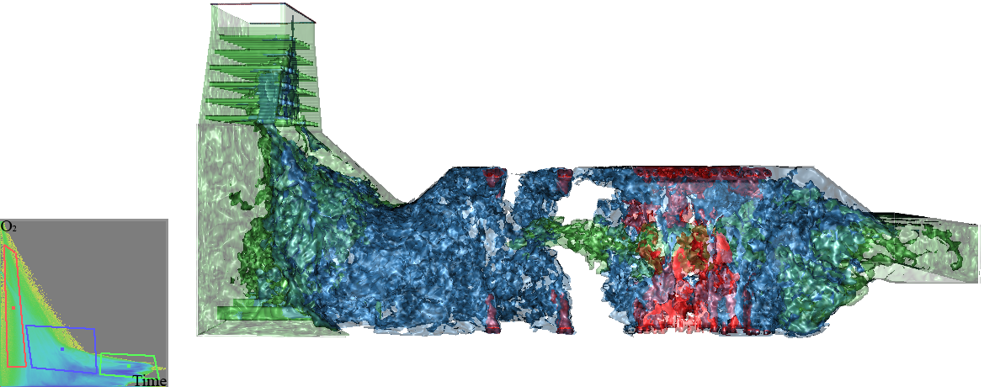

IEEE Transactions on Visualization and Computer Graphics (VIS 2016)
Kui Wu, Aaron Knoll, Benjamin Isaac, Hamish Carr, Valerio Pascucci

Multifield data are common in visualization. However, reducing these data to comprehensible geometry is a challenging problem. Fiber surfaces, an analogy of isosurfaces to bivariate volume data, are a promising new mechanism for understanding multifield volumes. In this work, we explore direct ray casting of fiber surfaces from volume data without any explicit geometry extraction. We sample directly along rays in domain space, and perform geometric tests in range space where fibers are defined, using a signed distance field derived from the control polygons. Our method requires little preprocess, and enables real-time exploration of data, dynamic modification and pixel-exact rendering of fiber surfaces, and support for higher-order interpolation in domain space. We demonstrate this approach on several bivariate datasets, including analysis of multi-field combustion data.